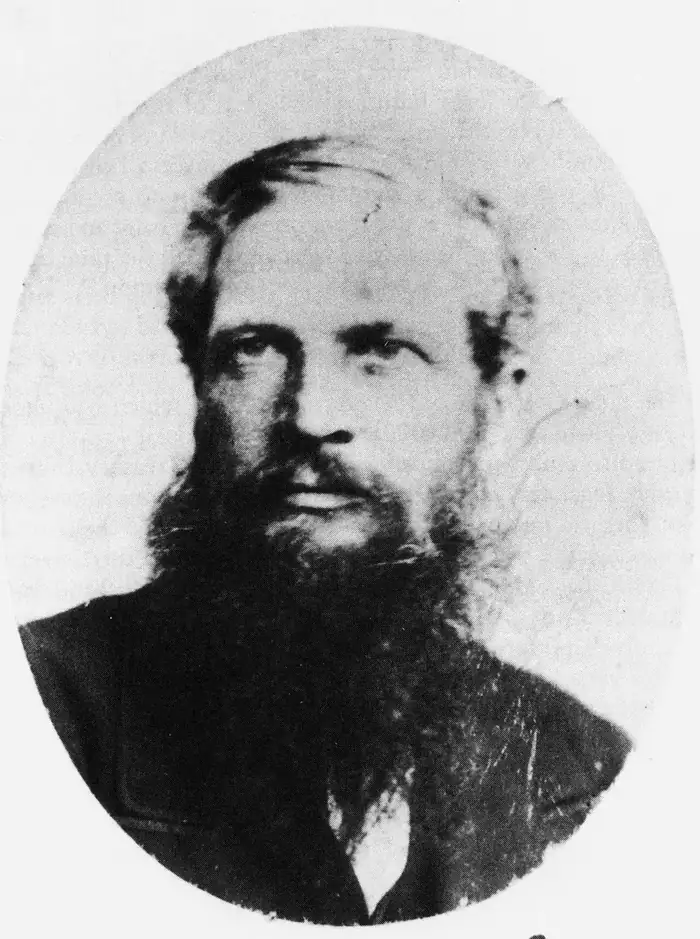

The record
Alexander died in Babylon in 323 BC. His body was taken to Egypt by Ptolemy, and a tomb — the Soma — was built in Alexandria. Roman emperors visited it: Augustus, according to Suetonius, touched the body, and Caracalla left offerings. The tomb's location was known in antiquity.
Maps, diagrams and images



The search
After antiquity the tomb disappears from the record. Alexandria has been rebuilt repeatedly, the palace quarter is under the modern city and partly under the sea, and no trace has been found. Candidates include the Nebi Daniel mosque area, the Latin cemetery, and sites now underwater.
The search continues, and it is one of the few genuinely plausible lost-tomb problems: the body was real, the tomb was real, and it was in a city whose ancient levels are largely unexcavated.
Documented: the death, the transfer and the tomb's existence.
Documented: the Roman visits.
Not found: the tomb.
Plausible: that it survives under the modern city or the harbour.
The honest label: live debate.
Why it is in the archive
Because it is a real lost tomb rather than an invented one, and because the reason it is lost — a city built on top of itself — is the same reason so much archaeology is impossible.
Open resources on this topic
- PapersOpen-access articles: DOAJ · PubMed Central · Internet Archive Scholar
- BooksPublic-domain and borrowable copies: Open Library · Project Gutenberg · Google Books · Internet Archive
Cite this page
Momin, S. (2026). Alexander's Lost Tomb. The Larger World Archive. https://drsamonline.github.io/LARGE_GLOBE/alexander-lost-tomb.htmlMomin, Sohil. “Alexander's Lost Tomb.” The Larger World Archive, 2026, https://drsamonline.github.io/LARGE_GLOBE/alexander-lost-tomb.html.Momin, Sohil. “Alexander's Lost Tomb.” The Larger World Archive, 2026. https://drsamonline.github.io/LARGE_GLOBE/alexander-lost-tomb.html.@misc{alexanders2026alexander,
author = {Momin, Sohil},
title = {Alexander's Lost Tomb},
year = {2026},
howpublished = {The Larger World Archive},
url = {https://drsamonline.github.io/LARGE_GLOBE/alexander-lost-tomb.html},
note = {Last reviewed 20 November 2026}
}Last reviewed 20 November 2026 · Corrections policy · this page is not peer reviewed
Sources for this page
- Wikipedia, “Tomb of Alexander the Great” — the searchen.wikipedia.org
- Wikipedia, “Alexander the Great” — the manen.wikipedia.org
- Wikipedia, “Alexandria” — the cityen.wikipedia.org
- Wikipedia, “Soma (Alexandria)” — the tomb's nameen.wikipedia.org